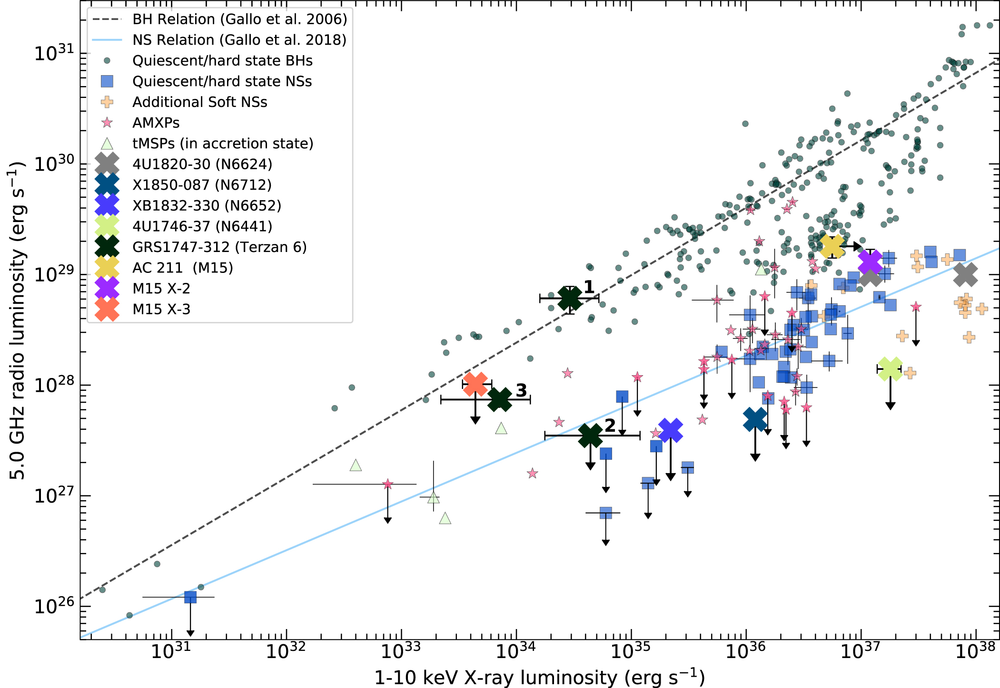
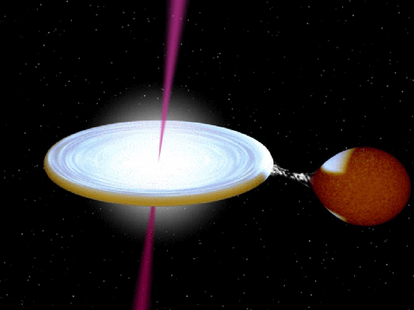
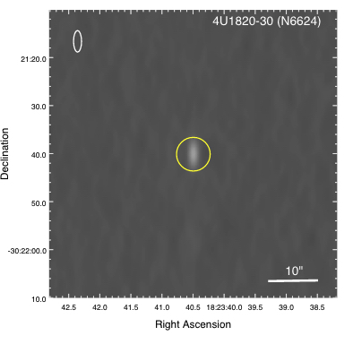

About Me
 An image of me presenting at NSBP 2022.
An image of me presenting at NSBP 2022.
I'm a fifth year PhD candidate at Michigan State University working with Profs. Jay Strader and Laura Chomiuk on accreting low-mass X-ray binairies in Galactic globular clusters. As an undergraduate, I was an AstroCom NYC fellow at The City University of New York at Hunter College and the American Museum of Natural History where I worked on blue stragglers. When I'm not mulling over the universe, I like to annoy my dogs and read.
If you would like me to give a talk or participate in a science outreach event, please contact me at: panurach at msu dot edu
Research & Publications
My research involves deep radio and X-ray observations of accreting neutron stars X-ray binaries to deepen our understanding of their jet—accretion disk coupling, as well as exploring other low-accreting compact binary sources in Galactic globular clusters. Here is the link to my publications!
Bright Accreting Neutron Stars
"/>
Radio and X-ray correlation plane for accreting compact sources from Panurach et al. 2021. Adapted from Bahramian et al. 2018
We analyze quasi/strictly-simultaneous radio and X-ray observations of eight bright accreting neutron stars (six persistenly accreting and two transients) to get an insight on the relationship between accretion inflow and jet/outflow. We find that these sources do follow the standard behaviors of accreting neutron star low-mass X-ray binaries, but with greater extremes of luminous radio emission. This work is currently accepted and published (Panurach et al. 2021, ApJ, 923, 88 ).
X1850-087 in NGC 6712

Artistic rendition of a low-mass X-ray binary by Rob Hynes.
X1850-087 is a persistently, accreting ultracompact neutron star X-ray binary from NGC 6712. In 2014, we saw this system showed unusal extreme radio variability. We undertook a radio monitoring program of X1850-087 using the Karl G. Jansky, with simultaneous Swift/X-ray telescope observations to understand what is driving the variability. This work is currently in-prep and should be submitted to Astrophysical Journal by the end of the year.
The MAVERIC Survey

A 5.5GHz radio image of 4U1820-30 in NGC 6624 taken with the ATCA for the MAVERIC Survey.
The Milky-way ATCA VLA Exploration of Radio-sources In Clusters (MAVERIC) Survey is a radio survey compromising of observing 50 nearby globular clusters (within <9kpc) for accreting compact objects. Our work will allow us to differentiate accreting neutron stars from black holes, and provide the best constraints on the population of black holes in Galactic globular clusters.
CV & Highlights
View my full curriculum vitae!
Education
- Michigan State University, Ph.D. in Astrophysics and Astronomy (Expected 2023)
- Michigan State University, M.S. in Astrophysics and Astronomy (2021)
- City University of New York: Hunter College, B.A. in Physics (2018)
Awards, Grants, and Fellowships
- #iteachmsu Educator Award (2021)
- NSF Graduate Research Fellowship (2020 - 2023)
- AstroCom NYC Fellowship (2016 - 2018)
- American Astronomical Society FAMOUS Travel Grant (2018)
- AstroCom NYC Senior Scholarship (2017)
PAREDS
In 2020, along with Profs. Laura Chomiuk, Paul Guèye and I founded PAREDS (Physics and Astronomy Research Experiences for Drew Scholars), which provides career guidence, professional development workshops, and paid research oppurtunities with Michigan State faculty and scientists for historically underrepresented astronomy undergraduates.
My personal responsibilities as co-director is to match students with mentors that fit their research interests, organize weekly summer professional development workshops, promote peer relationships within their cohort, and participate in bi-weekly leadership meetings.